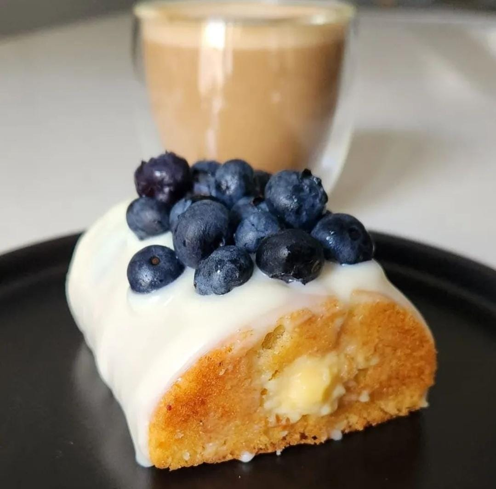

Budín de Limón con Arándanos y Chocolate

Batir 90g de manteca con 80g de azucar y la ralladura de 1 limon. agregar batido 1 huevo y luego 75g de harina con 10g de polvo de hornear. Por ultimo sumar una leche acida formada por 25ml de leche y 15ml de jugo de limon
Para la crema pastelera de limón calentar 150ml de leche y en un bowl aparte poner 2 yemas, 35 g de azucar y 18g de almidon de maiz. cuando hierva la leche volcarla en el bowl, mezclar y devolver todo al fuego. Revolver energicamente hasta que espese y luego agregar el jugo de un limon
Por ultimo, un baño de chocolate blanco y arándanos frescos... A disfrutar!